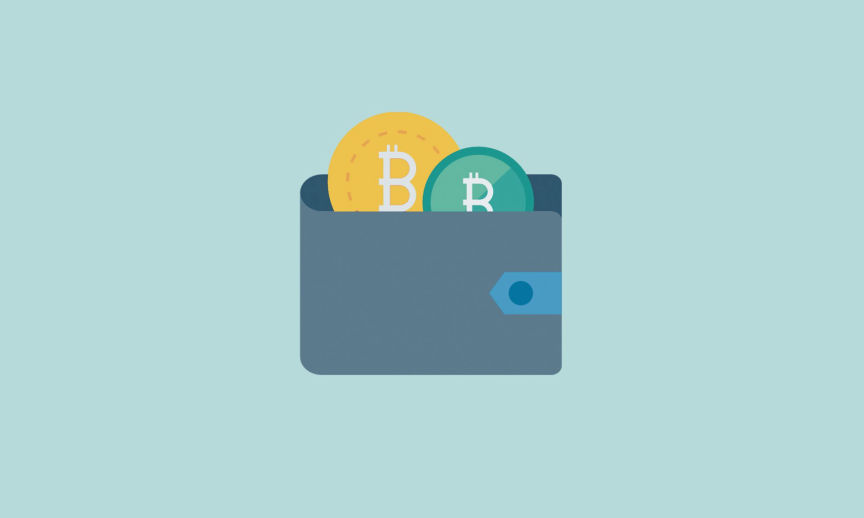
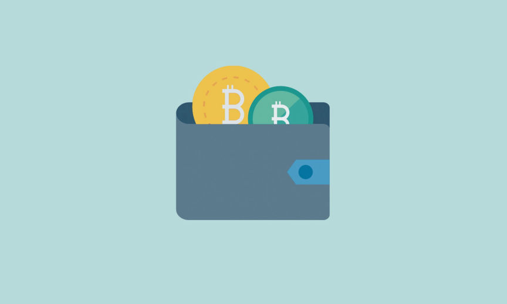

A Guide to Crypto Self-Custody
~3 min read | Published on 2023-02-01, tagged Cryptocurrency, Guides using 520 words.
Cryptocurrencies are fundamentally built to give you complete sovereignty over your finances. For you to have unrestricted access and control over your assets, you need self-custody.

When you own crypto, the crypto in your address has a public key and private key pair. To receive crypto, you share your public key or address. To spend the crypto, you need to verify the transaction and prove ownership with the private key associated with the public key. Custody in crypto, therefore, boils down to who has access to the private keys.
To safely store your private keys, you need a crypto wallet. There are two types of crypto wallets, hot wallets, and cold wallets.
Hot wallets are crypto wallets that are connected to the internet. They can be categorized as either custodial or non-custodial wallets.
In custodial wallets, your private keys are controlled by the wallet provider, this could be a crypto exchange such as Binance. Custodial wallets expose you to the risk of loss of your assets in cases such as when an exchange misuses user funds or gets hacked.
Non-custodial wallets on the other hand, give you complete control over your private keys. They can be browser-based, or software installed on mobile devices or desktops.
Cold wallets are non-custodial crypto wallets not connected to the internet. This makes them the most secure way to store your crypto. They store private keys in physical storage devices.
To transact, cold wallets need to be connected to a computer or mobile device. Even though the wallet is connected to the internet via the computer the private keys verify the transactions offline within the devices. After verification, the transactions are usually sent online to the blockchain for confirmation.
To reap the benefits of self custody you need to take the responsibility of securing your cryptocurrencies and protecting their private keys.
When setting up your non-custodial wallet, make sure you secure it with a strong password. In the course of setting up the wallet, you are given a recovery phrase, also known as a seed phrase. You can use the seed phrase to recover your wallet if you forget your password or if your hardware wallet gets lost.
You should write down the recovery phrase and store it in a location only you know. Do not store the recovery phrase and hardware wallet in the same place.
To summarize, self-custody is a secure, private, and convenient way to maintain control of your cryptocurrencies, but it also requires greater personal responsibility.

When you own crypto, the crypto in your address has a public key and private key pair. To receive crypto, you share your public key or address. To spend the crypto, you need to verify the transaction and prove ownership with the private key associated with the public key. Custody in crypto, therefore, boils down to who has access to the private keys.
To safely store your private keys, you need a crypto wallet. There are two types of crypto wallets, hot wallets, and cold wallets.
Hot Wallets
Hot wallets are crypto wallets that are connected to the internet. They can be categorized as either custodial or non-custodial wallets.
In custodial wallets, your private keys are controlled by the wallet provider, this could be a crypto exchange such as Binance. Custodial wallets expose you to the risk of loss of your assets in cases such as when an exchange misuses user funds or gets hacked.
Non-custodial wallets on the other hand, give you complete control over your private keys. They can be browser-based, or software installed on mobile devices or desktops.
Cold Wallets
Cold wallets are non-custodial crypto wallets not connected to the internet. This makes them the most secure way to store your crypto. They store private keys in physical storage devices.
To transact, cold wallets need to be connected to a computer or mobile device. Even though the wallet is connected to the internet via the computer the private keys verify the transactions offline within the devices. After verification, the transactions are usually sent online to the blockchain for confirmation.
To reap the benefits of self custody you need to take the responsibility of securing your cryptocurrencies and protecting their private keys.
When setting up your non-custodial wallet, make sure you secure it with a strong password. In the course of setting up the wallet, you are given a recovery phrase, also known as a seed phrase. You can use the seed phrase to recover your wallet if you forget your password or if your hardware wallet gets lost.
You should write down the recovery phrase and store it in a location only you know. Do not store the recovery phrase and hardware wallet in the same place.
Advantages of Self-Custody
- By controlling your private keys, you significantly reduce the risk of theft or loss of your assets due to hacking or other security breaches.
- Since you are not required to share personal information with a third party, you can fully protect your financial privacy.
- Self-custody gives you complete control over your funds. You can transact as much as you need to without restrictions from anyone.
Disadvantages of Self-Custody
- Anyone with access to your seed phrase could regenerate your wallet and spend your crypto.
- If you forget your password and lose your seed phrase, you will not be able to recover your wallet and you will, as a result, lose the assets stored in the wallet.
To summarize, self-custody is a secure, private, and convenient way to maintain control of your cryptocurrencies, but it also requires greater personal responsibility.